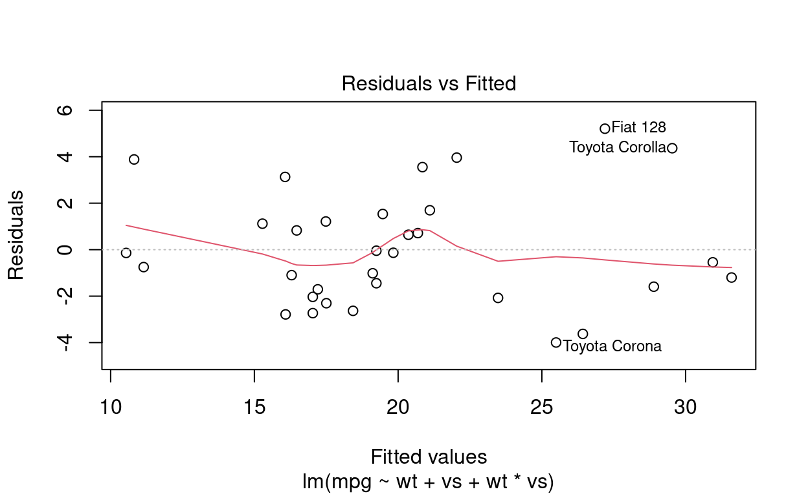

Introdução
A eficiência dos carros é uma das principais características que a indústria automobilística tenta optimizar. Melhorar a eficiência de um carro significa aumentar a quantidade de quilômetros que os carros conseguem rodar consumindo menos combustível. Não só para a indústria automobilística esse tema tem importância, como também para qualquer cidadão que esteja preocupado em gastar menos (afinal de contas, mais quilômetros rodados com menos combustível significa uma conta menor no fim do mês de gasolina), e também para qualquer pessoa com consciência ambiental, que deseja diminuir a quantidade de combustíveis fósseis que são queimados por dia.
Definição do problema
Dada a relevância de se estudar este problema, é que eu me guio pela indagção de quais características do carro explicam sua a eficiência (milhas por galão de combustível)?
Descrição básica da origem e da coleta dos dados
Para estudar isso, utilizarei a base de dados mtcars. Essa base inclui 32 linhas e 11 colunas. Cada observação é um modelo de carro diferente; e cada coluna é uma característica desse carro. Ao todo, portanto, temos 11 características de 32 modelos de carro para comparar.
A eficiência está representada nesta base de dados pela coluna mpg, que é a quantidade de milhas rodadas por galão de combustível (miles per galon).
Hipótese do estudo
Minha hipótese é a de que as seguintes variáveis são relevantes para se explicar a eficiciência dos carros:
- cyl;
- hp;
- wt;
- vs;
- am;
- gear;
- carb.
Sumários das variáveis (univariadas)
Variável dependente
Show code
ggplot(mtcars, aes(mpg)) +
geom_histogram(fill = "steelblue") +
geom_vline(aes(xintercept=mean(mpg)),
color="blue", linetype="dashed", size=1)
A começar pela variável de interesse, mpg, observamos a seguinte distribuição dos modelos de carro por eficiência. A média de eficiência é de aproximadamente 20 mpg. Temos 18 modelos de carro abaixo da média e 14 modelos acima dela, sendo que o modelo com a pior eficiência roda apenas 10.40 milhas por galão, enquanto o modelo mais eficiente roda mais que o triplo disso, com 33.90 milhas por galão.
Show code
summary(mtcars$mpg)
Min. 1st Qu. Median Mean 3rd Qu. Max.
10.40 15.43 19.20 20.09 22.80 33.90 Variáveis explicativas
Quanto às variáveis explicativas, temos os seguintes gráficos.
Show code
ggplot(mtcars, aes(cyl)) +
geom_histogram(fill = "steelblue")

Os cilindros são onde o combustível é queimado. Há apenas três tipos de carros e cilindros: carros com 4 cilindros, 6 cilindros ou 8 cilindros. O que vemos é que a maioria dos carros possui 8 cilindros, seguido de carros com 4 cilindros e, em terceiro lugar, carros com 6 cilindros. Essa característica se relaciona com a eficiência porque quanto mais cilindros existem, maior é a queima de combustível e, portanto, maior é a geração de poder para o carro.
Quanto ao gross horsepower (hp), essa característica diz respeito aos cavalos do carro. De forma genérica, o horsepower é uma indicação do quanto que o veículo consegue se mover sozinho. Quanto mais cavalos, mais rápido o carro consegue ser. Essa característica se relaciona com a eficiência porque carros com menos horsepower necessitam de mais energia para se movimentarem e, do contrário, carros com mais horsepower necessitam de menos energia para se movimentarem. Dito de outra maneira, quanto maior o horsepower, maior é a eficicência, porque menor é o gasto energético.
Vemos que a distribuição do horsepower é assimétrica para a direita (right skewed) ao compararmos a média (azul) com a mediana (vermelho).
Outra variável de interesse é o peso do carro. Quanto mais pesado é um caro, espera-se que menos eficiente ele seja.
O que vemos desse dado é uma grande concentração de valores que giram entorno da média de aproxidamente 3200 libras.
Show code
ggplot(mtcars, aes(vs)) +
geom_histogram(fill = "steelblue") +
scale_x_continuous(name = "Engine \n (0 = V-shaped, 1 = straight)", breaks = c(0,1))
A seguir, temos o tipo de motor. Essa variável é binária, ela assume apenas dois valores: ou o motoro é V-shaped, ou ele é straight. Na base de dados, essa característica está representada na coluna vs. Esperamos que o tipo de motor influencie na eficiência, porque é justamente no motor em que o consumo de combustível ocorre.
Show code
ggplot(mtcars, aes(am)) +
geom_histogram(fill = "steelblue") +
scale_x_continuous(name = "Transmission \n (0 = Automatic, 1 = Manual)", breaks = c(0,1))
Outra característica que esperamos que se relacione com a eficiência é o tipo de transmissão, se é manual (1) ou automático (0). Vemos que existem nessa base de dados mais carros automáticos do que manuais.
Show code
ggplot(mtcars, aes(gear)) +
geom_histogram(fill = "steelblue") +
scale_x_continuous(breaks = c(3,4,5))
Além disso, temos a quantidade de marchas que um carro possui. Existem carros apenas de 3, 4 ou 5 marchas. Pensamos que a marcha se relaciona com a eficiciência porque ela controla a quantidade de poder disponível do motor.
Show code
ggplot(mtcars, aes(carb)) +
geom_histogram(fill = "steelblue") +
scale_x_continuous(breaks=c(1:8))
Por fim, existe a quantidade de carburadores por carro. Os carburadores são o dispositivo dos carros que misturam ar e combustível para combustões internas. Espera-se que essa variável também se relacione com a eficiência do carro.
Gráficos de duas variáveis
Show code
p_cyl <- ggplot(mtcars, aes(cyl, mpg)) +
geom_point()
p_hp <- ggplot(mtcars, aes(hp, mpg)) +
geom_point()
p_vs <- ggplot(mtcars, aes(vs, mpg)) +
geom_point()
p_am <- ggplot(mtcars, aes(am, mpg)) +
geom_point()
p_gear <- ggplot(mtcars, aes(gear, mpg)) +
geom_point()
p_carb <- ggplot(mtcars, aes(carb, mpg)) +
geom_point()
g1 <- gridExtra::grid.arrange(
p_cyl,
p_hp,
nrow = 2
)
Show code
g2 <- gridExtra::grid.arrange(
p_vs,
p_am,
nrow = 2
)
Show code
g3 <- gridExtra::grid.arrange(
p_gear,
p_carb,
nrow = 2
)
Modelagem
Baseline model
A fórmula básica, da qual partiremos, é a seguinte:
\[
\operatorname{baseline\ model:\ mpg} = \beta_{0} + \beta_{1}(\operatorname{cyl}) + \beta_{2}(\operatorname{hp}) + + \beta_{3}(\operatorname{wt}) + \beta_{4}(\operatorname{vs}) + \beta_{5}(\operatorname{am}) + \beta_{6}(\operatorname{gear}) + \beta_{7}(\operatorname{carb}) + \epsilon
\] Essa equação de regressão ainda não representa a especificação final do modelo. É possível que algumas dessas variáveis não possuem efeito estatisticamente relevante sobre a variável de interesse mpg. Ou ainda pode ser que haja multicolinearidade entre algumas variáveis, ou algum tipo de interação, ou relação polinomial. Então esta não é a versão ajustada do modelo, mas é o modelo inicial, o qual chamarei de “baseline model”.
Quando rodamos a regressão, a nossa fórmula fica especificada com os seguintes coeficientes:
\[ \operatorname{baseline\ model:\ mpg} = 30.25 - 0.38(\operatorname{cyl}) - 0.02(\operatorname{hp}) - 2.18(\operatorname{wt}) + 97(\operatorname{vs}) + 2.11(\operatorname{am}) + 0.66(\operatorname{gear}) - 0.62(\operatorname{carb}) + \epsilon \] Esses parâmetros ficam melhor resumidos na tabela a seguir:
Call:
lm(formula = mpg ~ cyl + hp + wt + vs + am + gear + carb, data = mtcars)
Residuals:
Min 1Q Median 3Q Max
-4.2242 -1.4538 -0.4293 1.4548 5.2956
Coefficients:
Estimate Std. Error t value Pr(>|t|)
(Intercept) 30.25034 8.61471 3.511 0.00179 **
cyl -0.38285 0.87852 -0.436 0.66688
hp -0.01859 0.01710 -1.088 0.28762
wt -2.18465 1.02244 -2.137 0.04302 *
vs 0.96917 1.85506 0.522 0.60615
am 2.11755 1.88907 1.121 0.27340
gear 0.65975 1.43338 0.460 0.64946
carb -0.62289 0.58164 -1.071 0.29485
---
Signif. codes: 0 '***' 0.001 '**' 0.01 '*' 0.05 '.' 0.1 ' ' 1
Residual standard error: 2.578 on 24 degrees of freedom
Multiple R-squared: 0.8583, Adjusted R-squared: 0.817
F-statistic: 20.77 on 7 and 24 DF, p-value: 9.689e-09Olhando para esse teste, conseguimos ver que apenas dois coeficientes possuem signficância estatística: o intercepto (B0) e o coeficiente relativo ao peso do carro (B2). O teste de hipótese relativo ao B0 indica que com 99.99% de certeza conseguimos rejeitar a hipótese nula de que o intercepto é igual a 0. Já o teste de hipótese relativo ao B2 indica que com 95% de certza conseguimos rejeitar a hipótese nula de que a relação entre aquele coeficiente com a variável de interesse (mpg) é 0. Todos os demais coeficientes não conseguem ter a hipótese nula rejeitada, isto é, não é possível dizer que a relação dessas variáveis explicativas com a variável de resposta seja diferente de 0.
A partir disso, poderíamos ser levados a concluir que a única variável que explica a eficiência do motor é o peso do carro. Mas temos de tomar cuidado com essa conclusão. Ela é muito precipitada. O que pode estar acontecendo é que pode haver multicolinearidade ou interação entre as variáveis. Nesses casos, o efeito de uma variável sobre Y estaria sendo “roubado” e, por isso, ele fica invisível e não conseguimos rejeitar a hipótese nula de que o coeficiente é diferente de 0.
Multicolinearidade e Interações
Análise de cyl e hp
Para tentar desmistificar isso, precisamos avaliar as variáveis individualmente. Quando rodamos um modelo para cada variável, a história é outra. Todos os coeficientes se tornam estatisticamente significantes.
Show code
cyl_model <- lm(mpg~cyl, mtcars)
hp_model <- lm(mpg~hp, mtcars)
wt_model <- lm(mpg~wt, mtcars)
vs_model <- lm(mpg~vs, mtcars)
am_model <- lm(mpg~am, mtcars)
gear_model <- lm(mpg~gear, mtcars)
carb_model <- lm(mpg~carb, mtcars)
jtools::export_summs(cyl_model, hp_model, wt_model, vs_model, am_model, gear_model, carb_model, scale=TRUE)
─────────────────────────────────────────────────────────────────── Model 1 Model 2 Model 3 Model 4 Model 5
──────────────────────────────────────────────────────── (Interce 20.09 20.09 20.09 16.62 17.15
pt) *** *** *** *** ***
(0.57) (0.68) (0.54) (1.08) (1.12)
cyl -5.14
***
(0.58)
hp -4.68
***
(0.69)
wt -5.23
***
(0.55)
vs 7.94 ***
(1.63)
am 7.24 ***
(1.76)
gear
carb
──────────────────────────────────────────────────────── N 32 32 32 32 32
R2 0.73 0.60 0.75 0.44 0.36
─────────────────────────────────────────────────────────────────── All continuous predictors are mean-centered and
scaled by 1 standard deviation. *** p < 0.001;
** p < 0.01; * p < 0.05.
Column names: names, Model 1, Model 2, Model 3, Model 4, Model 5, Model 6, Model 7
6/8 columns shown.
Comparando, então, esses resultados com a equação que inclui todas as variáveis, podemos levantar fortes suspeitas de que existe multicolinearidade no nosso baseline model. Para diagnosticar a multicolinearidade, podemos usar o VIF.
Show code
car::vif(baseline)
cyl hp wt vs am gear carb
11.480450 6.409021 4.667601 4.076992 4.143941 5.216024 4.116132 O VIF nos dá alguns valores a que temos de nos atentar. Primeiro, observamos que o VIF do cyl é o maior de todos. Ele está acima de 5. Acima de 5 todos VIF é problemático. Outra variável problemática é hp. Além disso, há gear. Entretanto, como ele está apenas um pouco acima de 5, vou deixá-lo para uma análise posterior. O que eu vou testar agora é o que acontece com as demais variáveis ao retirar o cyl e hp.
Show code
wt vs am gear carb
4.395138 2.090715 3.881481 4.510498 3.160047 De fato, o VIF das variáveis diminuem. Agora não temos nenhum VIF que passe de 5. Entretanto, acho que seria cauteloso nos determos melhor em wt, gear e am, pois seus valores são os mais próximos de 5.
Comecemos pela análise de wt, rodando separadamente um modelo com wt e apenas uma outra variável.
Análise de wt
Show code
wt1 <- lm(mpg~wt+vs, mtcars)
wt2 <- lm(mpg~wt+am, mtcars)
wt3 <- lm(mpg~wt+gear, mtcars)
wt4 <- lm(mpg~wt+carb, mtcars)
jtools::export_summs(wt_model, wt1, wt2, wt3, wt4, scale=TRUE)
─────────────────────────────────────────────────────────────────── Model 1 Model 2 Model 3 Model 4 Model 5
──────────────────────────────────────────────────────── (Interce 20.09 18.71 20.10 20.09 20.09
pt) *** *** *** *** ***
(0.54) (0.72) (0.83) (0.55) (0.50)
wt -5.23 -4.35 -5.24 -5.37 -4.66
*** *** *** *** ***
(0.55) (0.60) (0.77) (0.68) (0.56)
vs 3.15
(1.19)
am -0.02
(1.55)
gear -0.24
(0.68)
carb -1.33
(0.56)
──────────────────────────────────────────────────────── N 32 32 32 32 32
R2 0.75 0.80 0.75 0.75 0.79
─────────────────────────────────────────────────────────────────── All continuous predictors are mean-centered and
scaled by 1 standard deviation. *** p < 0.001;
** p < 0.01; * p < 0.05.
Column names: names, Model 1, Model 2, Model 3, Model 4, Model 5
O que nós observamos com essa tabela de regressão é que nenhuma variável causa um distúrbio muito grande no coeficiente de wt. Se houvesse multicolinearidade entre wt e outra variável, então o desvio padrão do coeficiente iria disparar, o valor do coeficiente mudaria bruscamente, a significância estatística diminuiria e o R2 iria aumentar muito também. Mas o que vemos, na verdade, é uma relativa estabilidade em todos esses de wt para cada modelo. É “relativa” porque os valores não são idênticos, mas tampouco são discrepantes. Rodando um VIF para cada um dos modelos de regressão múltipla, observamos que todos os valores VIFs estão abaixo de 2.
Passemo a análise para gear.
Análise de gear
Show code
gear1 <- lm(mpg~gear+vs, mtcars)
gear2 <- lm(mpg~gear+am, mtcars)
gear3 <- lm(mpg~gear+wt, mtcars)
gear4 <- lm(mpg~gear+carb, mtcars)
jtools::export_summs(gear_model, gear1, gear2, gear3, gear4, scale=TRUE)
─────────────────────────────────────────────────────────────────── Model 1 Model 2 Model 3 Model 4 Model 5
──────────────────────────────────────────────────────── (Interce 20.09 17.00 17.19 20.09 20.09
pt) *** *** *** *** ***
(0.95) (0.98) (1.49) (0.55) (0.57)
gear 2.89 2.16 0.06 -0.24 4.11 ***
(0.97) (0.76) (1.47) (0.68) (0.60)
vs 7.06 ***
(1.50)
am 7.14
(2.95)
wt -5.37
**
(0.68)
carb -4.45
***
(0.60)
──────────────────────────────────────────────────────── N 32 32 32 32 32
R2 0.23 0.56 0.36 0.75 0.73
─────────────────────────────────────────────────────────────────── All continuous predictors are mean-centered and
scaled by 1 standard deviation. *** p < 0.001;
** p < 0.01; * p < 0.05.
Column names: names, Model 1, Model 2, Model 3, Model 4, Model 5
Repetindo o mesmo teste, mas agora com o foco na variável gear, nós observamos um ponto interessante: a adição da variável wt faz com que gear perca totalmente a sua significância estatística. Lembrando da tabela anterior (sobre a mudança do coeficiente wt com a adição de outras variáveis), vemos que gear não influencia o valor de wt, mas que o invereso acontece. Podemos, então, avaliar se existe alguma interação entre wt e gear.
Show code
interacao_gear_wt <- lm(mpg~gear*wt, mtcars)
p1 <- mtcars %>%
ggplot(aes(x = wt, y = mpg)) +
geom_point(aes(color = gear)) +
scale_color_gradient2(midpoint=4, low="#c19615", mid="#1594c2" ,high="#16c298", space="Lab") +
geom_smooth(method = "lm", se = FALSE, colour = "#a3a3a3") +
theme(legend.position = 'bottom')
p2 <- mtcars %>%
ggplot(aes(x = wt, y = mpg)) +
geom_point(aes(color = gear)) +
scale_color_gradient2(midpoint=4, low="#c19615", mid="#1594c2" ,high="#16c298", space="Lab") +
geom_smooth(method = "lm", se = FALSE, colour = "#a3a3a3") +
facet_wrap(~ gear, ncol=2, scales="free") +
guides(colour = "none")
gridExtra::grid.arrange(p1, p2, widths=c(1.5,2))
Vemos, por esse gráfico, que para cada diferente gear o efeito de wt sobre y não muda, a relação sempre é negativa.
Levando tudo isso em consideração, podemos concluir que gear e wt não possuem nem uma relação multicolinear, nem realizam uma interação entre si. A única obseração que nos sobra é que todo o efeito que gear desempenha sobre mpg já está sendo captado por wt. Devemos, então, excluir gear do nosso modelo, a fim de ter um modelo mais parcimonioso.
Falta agora apenas a análise de am.
Análise de am
Show code
am1 <- lm(mpg~am+vs, mtcars)
am2 <- lm(mpg~am+gear, mtcars)
am3 <- lm(mpg~am+wt, mtcars)
am4 <- lm(mpg~am+carb, mtcars)
jtools::export_summs(am_model, am1, am2, am3, am4, scale=TRUE)
─────────────────────────────────────────────────────────────────── Model 1 Model 2 Model 3 Model 4 Model 5
──────────────────────────────────────────────────────── (Interce 17.15 14.59 17.19 20.10 16.98
pt) *** *** *** *** ***
(1.12) (0.93) (1.49) (0.83) (0.78)
am 7.24 *** 6.07 *** 7.14 -0.02 7.65 **
(1.76) (1.27) (2.95) (1.55) (1.22)
vs 6.93 ***
(1.26)
gear 0.06
(1.47)
wt -5.24
***
(0.77)
carb -3.54
***
(0.61)
──────────────────────────────────────────────────────── N 32 32 32 32 32
R2 0.36 0.69 0.36 0.75 0.70
─────────────────────────────────────────────────────────────────── All continuous predictors are mean-centered and
scaled by 1 standard deviation. *** p < 0.001;
** p < 0.01; * p < 0.05.
Column names: names, Model 1, Model 2, Model 3, Model 4, Model 5
O que observamos é que am, igual ao que ocorre com gear perde toda a sua significância estatística com a adição de wt. Entretanto, o inverso não é verdadeiro: am não retira o efeito de wt. Vamos então realizar a mesma análise de interação am com wt
Show code
p3 <- mtcars %>%
ggplot(aes(x = wt, y = mpg)) +
geom_point(aes(color = am)) +
#scale_color_gradient2(midpoint=4, low="#c19615", mid="#1594c2" ,high="#16c298", space="Lab") +
geom_smooth(method = "lm", se = FALSE, colour = "#a3a3a3") +
theme(legend.position = 'bottom')
p4 <- mtcars %>%
ggplot(aes(x = wt, y = mpg)) +
geom_point(aes(color = am)) +
geom_smooth(method = "lm", se = FALSE, colour = "#a3a3a3") +
facet_wrap(~ am, ncol=2, scales="free") +
guides(colour = "none")
gridExtra::grid.arrange(p3, p4, widths=c(1.5,2))
Novamente, o que observamos é que am não influencia o resultado de wt. Não há nem multicolineridade, nem interação. A melhor solução, portanto, é retirar am do modelo.
Análise de vs e carb
Até aqui vimos que cyl e hp tinham multicolinearidade com as demais variáveis porque possuíam VIFs extremamente altos. Então excluímos eles do modelo. Vimos também que os efeitos de gear e de am sobre mpg eram absorvidos por wt. Então também excluímos eles, a fim de deixar o modelo mais parcimonioso.
Das 7 variáveis inciais, portanto, sobraram 3: wt, vs e carb. Já análisamos wt. Falta apenas vs e carb.
wt, tanto carb quanto vs perdem sua significância estatística.
Call:
lm(formula = mpg ~ wt + vs + carb, data = mtcars)
Residuals:
Min 1Q Median 3Q Max
-4.0980 -2.3545 0.1704 1.2852 5.6616
Coefficients:
Estimate Std. Error t value Pr(>|t|)
(Intercept) 34.3808 2.5190 13.648 6.75e-14 ***
wt -4.3036 0.6118 -7.035 1.19e-07 ***
vs 2.3489 1.3062 1.798 0.0829 .
carb -0.5234 0.3751 -1.395 0.1739
---
Signif. codes: 0 '***' 0.001 '**' 0.01 '*' 0.05 '.' 0.1 ' ' 1
Residual standard error: 2.735 on 28 degrees of freedom
Multiple R-squared: 0.8139, Adjusted R-squared: 0.794
F-statistic: 40.83 on 3 and 28 DF, p-value: 2.349e-10Isso não indica multicolinearidade porque os VIFs das variáveis são muito baixos.
Show code
car::vif(a)
wt vs carb
1.484433 1.795593 1.520735 Show code
wt1 <- lm(mpg~wt+vs, mtcars)
wt4 <- lm(mpg~wt+carb, mtcars)
wt5 <- lm(mpg~vs+carb, mtcars)
jtools::export_summs(wt_model, vs_model, carb_model, wt1, wt4, wt5, a, scale=TRUE)
─────────────────────────────────────────────────────────────────── Model 1 Model 2 Model 3 Model 4 Model 5
──────────────────────────────────────────────────────── (Interce 20.09 16.62 20.09 18.71 20.09
pt) *** *** *** *** ***
(0.54) (1.08) (0.90) (0.72) (0.50)
wt -5.23 -4.35 -4.66
*** *** ***
(0.55) (0.60) (0.56)
vs 7.94 *** 3.15 *
(1.63) (1.19)
carb -3.32 -1.33
(0.92) (0.56)
──────────────────────────────────────────────────────── N 32 32 32 32 32
R2 0.75 0.44 0.30 0.80 0.79
─────────────────────────────────────────────────────────────────── All continuous predictors are mean-centered and
scaled by 1 standard deviation. p < 0.001;
** p < 0.01; * p < 0.05.
Column names: names, Model 1, Model 2, Model 3, Model 4, Model 5, Model 6, Model 7
6/8 columns shown.
O que observamos é que as variáveis vs e carb, sem a presença de wt possuem uma significância estatística alta, a 99,999% (Modelos 1, 2 e 3). Combinadas individualmente com wt, elas ainda mantém sua significância estatística (modelos 4 e 5), mas a 95% de certeza. Em um modelo sem wt, mas com ambas as variáveis vse carb, o que observamos é que carb perde sua significância, enquanto vs se mantém significante a 99% (modelo 6).
Para continuar a análise, iremos observar o que acontece quando as variáveis interagem entre si.
Show code
wt6 <- lm(mpg~wt+vs+wt*vs, mtcars)
wt7 <- lm(mpg~wt+carb+wt*carb, mtcars)
wt8 <- lm(mpg~carb+vs+carb*vs, mtcars)
jtools::export_summs(wt_model, wt6, wt7, wt8, scale=TRUE)
────────────────────────────────────────────────────────────────── Model 1 Model 2 Model 3 Model 4
───────────────────────────────────────────────────── (Intercept 20.09 *** 18.27 *** 19.34 *** 17.06 ***
)
(0.54) (0.69) (0.53) (1.19)
wt -5.23 *** -3.43 *** -4.81 ***
(0.55) (0.68) (0.52)
vs 2.41 5.37
(1.15) (2.07)
wt:vs -2.85
(1.19)
carb -1.16 -0.90
(0.52) (1.13)
wt:carb 1.81
(0.68)
carb:vs -2.45
(2.21)
───────────────────────────────────────────────────── N 32 32 32 32
R2 0.75 0.83 0.83 0.51
────────────────────────────────────────────────────────────────── All continuous predictors are mean-centered and
scaled by 1 standard deviation. ** p < 0.001; **
p < 0.01; * p < 0.05.
Column names: names, Model 1, Model 2, Model 3, Model 4
O que observamos com as interações é que, quando vs e carb interagem individualmente com wt, todos os coeficientes se mantém estatisticamente relevantes (modelos 2 e 3). Entretanto, quando realizamos uma interação apenas entre essas duas variáveis, carb perde sua significância (modelo 4). Se carb perde a significância quando interage com vs, então vou optar por manter no modelo apenas vs, a fim de garantir um modelo mais parcimonioso.
Conclusão parcial
Com todas as alterações no modelo, ficamos apenas com duas variáveis no final e uma interação:
\[ \operatorname{adjusted \ model:\ mpg} = \beta_{0} + \beta_{1}(\operatorname{wt}) + \beta_{2}(\operatorname{vs}) + \beta_{3}(\operatorname{wt*vs}) + \epsilon \]
Calculando os coeficientes, ficamos com o seguinte modelo: \[ \operatorname{adjusted \ model:\ mpg} = 29.53 - 3.50(\operatorname{wt}) + 11.77(\operatorname{vs}) - 2.90(\operatorname{wt*vs}) + \epsilon \]
Diagnóstico do modelo
Por fim, resta apenas avaliar se o modelo ficou bom ou não.
Show code
plot(adjusted)

A começar pelo gráfico de resíduos, há duas observações improtantes. Primeiro, os resíduos não ficaram iguais a zero. Isso é bom, uma vez que resíduo 0 significaria um sobreajuste do modelo. Seria tão artificial que seria um modelo ruim. A segunda obseravção importante é que a forma como os resíduos se distribuem não possui nenhum padrão. A distribuição aleatória dos resíduos indica um modelo saudável.
Além disso, analisando o gráfico que nos indica a distância de Cook e o efeito alavanca de outliers, o que observamos é que não existem leverage outliers. Os pontos estão bem distantes da região de cook.
Conclusão e discussão
No fim, portanto, podemos concluir que a melhor explicação que podemos dar para a eficiência dos carros envolve o peso (wt) e o tipo de motor (vs). Essas variáveis interagem entre si, porque cada tipo de motor possui um peso diferente.
Como uma de nossas variáveis é binária, o intercepto se torna uma casela de referência. Essa casela indica a eficiência do carro cujo motor é V-shaped e não pesa nada (algo que só é possível em condições de laboratório, quando anulamos a gravidade). Este motor (v-shaped, sem peso) roda 29.53 milhas por galão de combustível. Se mudarmos o motor para um motor straight, então a eficiência aumenta em 11 milhas por galão, em média, ficando, aproximadamente, 41 mpg. Mas isso só se aplica também nas condições ideais sem gravidade, em que o peso permanece 0.
Quando começamos a considerar a variável de peso, então a interpretação do modelo se modifica ligeiramente, por causa da interação. No caso do motor V-shaped, para cada 1000 libras que o carro ganha, a sua eficiência diminui em 3.5 milhas por galão. Para o motor straight, a cada 1000 libras que o carro ganha, então a eficiência do motor diminui em média 5.9 milhas por galão.